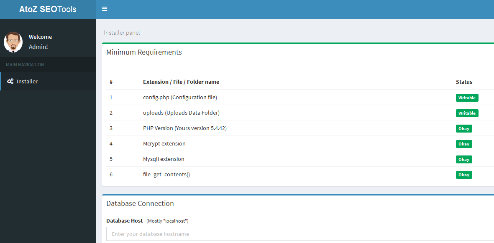

Thank you for purchasing. If you have any questions that are beyond the scope of this help file, please feel free to email via my user page contact form here. Thanks so much!
|
|
1. Upload the files present on "Upload" directory to your website using FTP or file manager in your hosting's control panel & keep writable mode for "uploads" directory and "/core/config/db.config.php" file
2. Create MySQL database in your hosting account.
3. Visit the "index.php" page in your web browser where you have upload the files e.g. http://www.example.com/index.php
4. It automatically redirect to installation panel page.
5. Provide the necessary information i.e. database-host, database-name, database-username and database-password
6. Provide item purchase code for verification of script purchase. (Item purchase code will be found on here http://codecanyon.net/downloads)
7. Click "Submit" button, it will be shown a successful message, if you have entered correct information of databse and item purchase code. Then enter your admin user id and password.
9. Now click "Install" button, after few seconds (mostly 5 to 10 seconds) it will be shown a successful message with database table creation log file.
10. You have done the installation. If you found any errors and bugs while installation - Please report and check the support section.
11. After installation, put your site on maintenance mode (Admin Panel -> Maintenance) and make basic changes such as title, description, keywords etc..
12. After done all customization, release the maintenance mode.

1. Setting up cron is an important step in the installation. It helps to generate sitemap, database backups and clean up temporary directory regularly.
2. Cron Job path can be found on Admin Panel -> Cron Job -> Cron Job Path
3. Interval between cron job execution is 5 miniutes to 15 miniutes (Recommended).
How to setup a cron job in cpanel?
Tutorial 1:
https://www.namecheap.com/support/knowledgebase/article.aspx/9453/29/how-to-run-scripts-via-cron-jobs
Tutorial 2:
http://support.hostgator.in/articles/cpanel/how-do-i-create-and-delete-a-cron-job
Tutorial 3:
https://www.siteground.com/tutorials/cpanel/cron_jobs.htm
Cron Job setup steps vary on each hosting service and control panels. So, it is recommended to refer hosting service knowledge base / help sections
1. Login into Admin Panel -> Interface -> Create New Language
2. Keep the status disabled until making complete translation.
3. After making translation, enable the language from admin panel.
For helping other customers, please try to share translated language backup file to us ( rainbowbalajib@gmail.com ).
Here you can setup OAuth settings.
Admin Panel -> Users -> Settings -> OAuth Settings
Setup Google OAuth
1. Visit below URL
http://console.developers.google.com/
2.Now follow up steps present on below video
Setup Facebook OAuth
1. Visit below URL
https://developers.facebook.com
2.Now follow up steps present on below video
Setup Twitter OAuth
1. Visit below URL
https://apps.twitter.com/
2.Now follow up steps present on below video
Register Here:
https://moz.com/community/join
After sign up, go to here and click free api button
https://moz.com/products/api/pricing
It will generate Moz secret code and access id.
1. Don't do any customization on "default" theme. It will make you difficult to upgrade on future releases
of Turbo Website Reviewer.
2. So, always clone the "default" theme directory and make it as a new theme(Admin Panel -> Interface -> Manage Themes -> Select Theme -> Click "Clone" button). Using the cloned files, do
any customization of inteface.
3. Themes files are combination of HTML and simple PHP codes. 90% of codes are Pure HTML on theme files.
4. So make use of any HTML editors and do any customizations.
5. Theme information must be included on "themeDetails.xml" file. If you cloned exiting theme,
make sure you change this information first.
Shortcode will be used inisde pages, blog posts and posting multilingual strings.
Shortcode return on below format:
{{short-code-name}}
Simple short code calls:
{{date}} -> Return today date
{{ip}} -> Return client IP
{{baseURL}} -> Return base link of your website
{{ads_720x90}} -> Return Ad Code (Size: 720x90)
Multilingual string calls:
{{lang[1]}} -> Return active language string of 1
{{lang[9]}} -> Return active language string of 9
Added: Admin can update/change user password. Updated: AJAX Controller (Mobile friendly checker addon issue) Updated: Google Pagespeed Insights Checker Fixed: Throwing empty file error at "imagecreatefromjpeg" function
Updated: Alexa helper library Updated: WHOIS Class Updated: PHPMailer into latest stable! Updated: File Manager library Updated: Blacklist Lookup DB Fixed: Keywords Cloud - Encoding issues Fixed: Global Traffic Rank Fixed: Google Index Count Fixed: Some minor bugs
Updated: WHOIS Class Updated: Keyword Position Checker Updated: Google Index Checker Updated: File Manager library Updated: Simple HTML DOM library Updated: Blacklist Lookup database Fixed: Google Maps Issue at "My IP Address" tool Fixed: Some minor bugs
Updated: Keyword Position Checker Fixed: Some minor bugs
Updated: Google Index Checker Updated: Keyword Position Checker Updated: Plagiarism Checker
Updated: Alexa helper library Updated: WHOIS Class Updated: Database Helper Fixed: Sitemap Issues Fixed: CKEditor Issues
Now compatible with PHP 7.2 & PHP 7.3 Updated: Alexa helper library Updated: WHOIS Class Updated: File Manager library Fixed: Datatables not responsive (Admin Panel) Fixed: Incorrect user IP for Cloudflare users
Added: Theme clone feature from Admin Panel Added: Custom "Hreflang" attribute feature Improved: Admin panel sitemap generation Fixed: Failed to capture user IP details (if "X-Forwarded-For" contains multiple ips) Fixed: Twitter don't allow query types of callback url Fixed: XML sitemap generator tool includes "tel:" links. Fixed: Some minor bugs
Added: Restore a database backup options Updated: WHOIS Class Updated: File Manager library Updated: Alexa helper library Fixed: "Online Ping Website Tool" issue Fixed: Dashboard pageview chart bug Fixed: Admin password reset file issue Fixed: Admin panel send mail feature have HTML encoding issue Fixed: PDO connection crash for custom port number at DB host Fixed: Adguard users can't get adblock warning message.
Multilingual Support Application Level DDoS Detection Added "My Profile" page Removed "AVG Antivirus Checker" Tool Added "Suspicious Domain Checker" Tool Ability to install on sub-links (http://your-domain.com/seo-tools/) that can't possible on 1.x versions. Google reCAPTCHA Support Twitter OAuth Support Shortcode Support Adblock Detection Database Backup Admin Panel - File Manager Admin Panel - Language Editor Analytics with Who's Online SEO tools search bars on Homepage & Sidebars. Editable Email Templates Updated latest PHPMailer class Updated WHOIS class Updated "Geo IP" database Added support to PHP 7.2 (Latest PHP version) Core Framework Updated (Stable Build v1.4) Bug fixes & minor improvements on all tools. Added "Bulk GEO IP Locator" Tool (Free Addon) Added "Color Picker" Tool (Free Addon) Added "RGB to Hex" Tool (Free Addon) Added "Htaccess Redirect Generator" Tool (Free Addon)
Updated: Latest PHPMailer Class Updated: Latest Responsive File Manager Fixed: Blacklist Lookup (Theme Error)
Updated: WHOIS Class Removed: DMOZ Checker Tool (dmoz.org is no longer available) Fixed: Some minor bugs
Updated: Admin Sitemap Generator Updated: Moz API Helper Fixed: Simple HTML DOM library crash "Website Reviewer" add-on
Updated: Geo IP database
Updated: FB OAuth Library
Updated: Simple HTML DOM Library
Added: Export as CSV Option on following tools
i) Link Analyzer
ii) Domain Authority Checker
iii) Page Authority Checker
Added: Export "robots.txt" file at Robots.txt Generator
Fixed: Some input sites return 403 Forbidden
Fixed: Minor bug on XML Sitemap Tool
Fixed: Addons installer bug to support Custom Themes
Updated: PHPMailer Library Updated: CKEditor (Page Editor) Fixed: Some minor bugs
Added: Support for PHP 7 Added: HTTPS / WWW switching functionality Added: Google CSE API for for Plagiarism Checker Added: Support for new "dmoz.org" site (*DMOZ Checker Tool) Fixed: Incorrect "Google Index" status for some servers
Added: Google Pagespeed Insights Checker Added: Captcha (Image) Reload Option Added: Google CSE API v2 Added: German language (Thanks for the translation deburna) Added: French Language (Thanks for the translation maranto) Added: Export Client Details as CSV Added: Support for Premium Membership System (*Premium Addon) Improved: Backlink Checker Improved: PHP Mail Functionality Fixed: Incorrect AVG Status Fixed: Missing FB Email Field (Oauth) Fixed: Addons Size Limit Error Fixed: Incorrect backlink status Removed: Pagerank status / tool (Officially discontinued by Google)
New: Plagiarism Checker v2 New: IP GEO location Finder (*Free Addon) Improved: Pagerank System Improved: Keyword Position Checker with New Google Results Parser Fixed: WHOIS Data Errors Fixed: Blacklist Lookup Errors
Improved: Keyword Position Checker Updated: Latest version of File Manager & CKEditor - Due to security vulnerabilities! Fixed: Minor bug on footer page links
Improved: Keyword Density Checker Added: "Save As XML file" feature for XML Sitemap Generator Added: "Save As Screenshot" feature for Website Screenshot Generator Added: "Loading Bar" on Some Tools (More time to process) Fixed: Moz API Bugs Fixed: XML Sitemap Generator Bugs Fixed: Bug on Redirecting / HTTPS Sites Fixed: Bug on Admin Panel -> Site Snapshot Cleaner Fixed: Timeout Issue on Server Status Checker Security Fix: IP based protection against Bot account creation Some minor bugs
Improved Addon Installation Added Sitemap Generator for Blog Posts Framework Updated (Stable Build v1.8.2) Fixed: Admin blank page issue Fixed: Htaccess issues Some minor bugs
Initial release
AdminLTE Theme - https://almsaeedstudio.com
PHPMailer - https://github.com/PHPMailer/PHPMailer
Freepik - http://freepik.com/
Bootstrap - http://getbootstrap.com/
Geodatabase - https://www.maxmind.com/
----ICON PACKS----